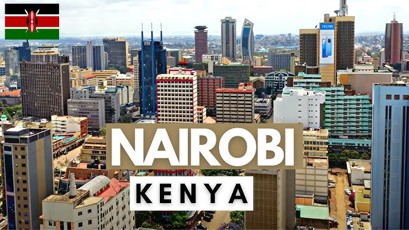
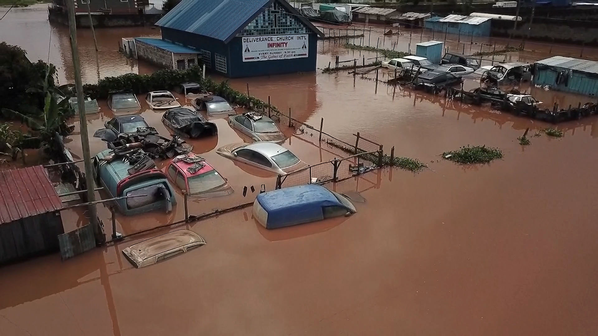

Nairobi: Gateway to East African accessibility expansion across all 54 nations
Africa's Economic Powerhouses: Leading the Charge
Phase Two strategically targets Africa's most developed economies and urban centers, recognizing that accessibility improvements in these high-impact areas will create ripple effects across the continent. South Africa, Nigeria, Kenya, Egypt, and Morocco represent critical hubs where inclusive infrastructure can drive maximum economic and social impact.
These nations collectively represent over 60% of Africa's GDP and urban population, making them essential for demonstrating the transformative power of accessible technology. By focusing on these key markets first, Waide Mobility can establish robust business models and technical standards that can be scaled to other African countries.
"Africa's developed economies must lead by example. When South Africa, Nigeria, and Kenya embrace accessibility, the entire continent follows." - Charity Adhiambo, Integration Partner, Waide Mobility
Building on Lagos Success: Pan-African Expansion Strategy
Phase Two leverages the proven methodologies and community-driven approach established in Lagos, adapting them to Africa's diverse economic contexts. The initiative targets 1,000+ public buildings across transport hubs, universities, government offices, and cultural centers in all 54 African nations, with priority given to major economic centers.
This pan-African approach recognizes the interconnected nature of African economies and the shared challenges of accessibility across borders. By establishing strong partnerships with local organizations and governments, Waide Mobility aims to create a scalable model for accessibility implementation across the entire continent.
Strategic Partnerships Driving Change:
- South Africa: Partnership with University of Cape Town and South African National Council for the Blind
- Nigeria: Collaboration with Lagos State Government and National Commission for Persons with Disabilities
- Kenya: Working with University of Nairobi and Kenya Institute of Special Education
- Egypt: Partnership with Cairo University and Egyptian Federation for Disabilities
- Morocco: Collaboration with Mohammed V University and Moroccan Association for the Deaf
- Regional: African Union integration for continent-wide accessibility standards
Addressing Africa's Diverse Accessibility Challenges
Africa's 54 nations present a rich tapestry of accessibility challenges that require comprehensive, context-aware solutions:
Urban-Rural Spectrum
From Cape Town's modern infrastructure to rural villages, bridging accessibility gaps across development levels
Linguistic Diversity
Supporting 2,000+ languages from Arabic and Swahili to indigenous languages and colonial legacies
Infrastructure Variations
Adapting to different building standards from advanced cities like Johannesburg to developing urban centers
Economic Diversity
Creating sustainable models from high-income nations like South Africa to developing economies across the continent
Climate Adaptation: Building Resilience Across Africa

Climate-resilient navigation: Essential for Africa's extreme weather challenges
Africa's vulnerability to climate change makes accessibility solutions even more critical. From the Sahara's extreme heat to coastal flooding and tropical cyclones, the continent's diverse climate challenges necessitate technology that works reliably in all conditions.
Waide Mobility's Phase Two incorporates climate-resilient features specifically designed for Africa's varied environmental conditions:
- Drought-Resistant Navigation: Offline capabilities for arid regions like the Sahara and Kalahari
- Flood-Aware Routing: Alternative paths avoiding flood-prone areas from Lagos to Maputo
- Heat-Optimized Interfaces: Battery-efficient designs for extreme temperatures across the continent
- Multi-Hazard Preparedness: Emergency navigation during cyclones, earthquakes, and other extreme events
- Desert Storm Navigation: Sand-resistant technology for North African operations
Economic Transformation Through Inclusion
Phase Two's economic impact extends beyond direct accessibility benefits, targeting Africa's largest economies for maximum impact:
Projected Economic Benefits
- Job Creation: 500+ positions in mapping, technology, and community engagement across major cities
- Tech Ecosystem Growth: Stimulating Africa's technology sector from Lagos to Cape Town
- Tourism Enhancement: Making African cities from Cairo to Johannesburg more attractive to international visitors
- Productivity Gains: Reducing navigation-related time losses and improving workforce participation continent-wide
- Innovation Hub Development: Positioning Africa's major cities as global leaders in accessible technology
The World Bank's research indicates that improving accessibility in developing regions can yield returns of 4-7% of GDP through increased workforce participation and enhanced service delivery. In Africa's context, this translates to billions in economic value creation across the continent's major economies.
Technology Localization: African Innovation Ecosystem
Pan-African collaboration: Technology professionals building continent-wide solutions
Phase Two emphasizes technology adaptation to Africa's diverse contexts, from advanced economies to developing nations:
Localized Features:
- Multi-Language Support: Primary language support for Arabic, Swahili, French, Portuguese, and indigenous languages
- Mobile Money Integration: Payment and donation systems using M-Pesa, Airtel Money, MTN Mobile Money, and Orange Money
- Community Mapping: Involving local youth and disability advocates in data collection across all 54 nations
- Continental Connectivity: Cross-border navigation for African Union citizens and regional economic communities
- Offline-First Design: Critical for areas with unreliable internet infrastructure across the continent
Measuring Impact: Comprehensive Evaluation Framework
Success in Phase Two will be evaluated through multiple dimensions:
Accessibility Metrics
Buildings mapped, users reached, navigation efficiency improvements
Economic Indicators
Jobs created, businesses supported, tourism revenue impact
Social Impact
Community engagement, disability inclusion, awareness building
Climate Resilience
Emergency navigation effectiveness, disaster response improvements
The Path Forward: From Economic Hubs to Continental Standards
Phase Two serves as a bridge between Lagos's proof-of-concept and continent-wide implementation, focusing on Africa's most influential economies. Key objectives include:
- Establishing continental accessibility standards through Africa's economic powerhouses
- Developing sustainable funding models that leverage South Africa's and Nigeria's advanced markets
- Building local capacity for ongoing mapping and maintenance across all economic contexts
- Creating replicable models from Johannesburg's infrastructure to smaller African cities
- Fostering cross-border collaboration and knowledge sharing through the African Union
- Demonstrating ROI in major markets to attract investment for broader continental rollout
Join Africa's Accessibility Movement
Your support can help transform accessibility across all 54 African nations, starting with our economic powerhouses:
Support Pan-African Expansion
Contribute to mapping initiatives across Africa's major economies and beyond
Donate NowPartner Across Africa
Organizations can sponsor continental mapping or provide expertise in any African nation
Partner With UsConclusion: Africa Leading Inclusive Innovation
Waide Mobility's Phase Two initiative represents Africa's commitment to inclusive development. By starting with our economic powerhouses like South Africa, Nigeria, and Kenya, and expanding across all 54 nations, we're not just mapping buildings—we're mapping a more accessible, resilient, and prosperous future for 1.4 billion Africans.
The success of this pan-African expansion will serve as a blueprint for accessibility implementation across the continent, proving that inclusive technology can drive both social and economic transformation from Cape Town to Cairo.
Be Part of Africa's Future
Support accessibility innovation across all 54 African nations